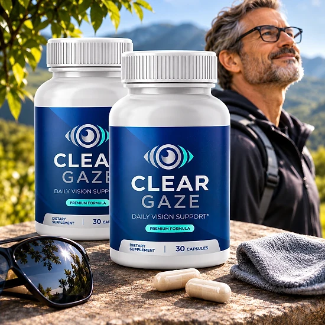
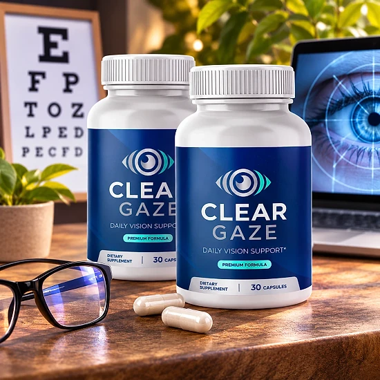
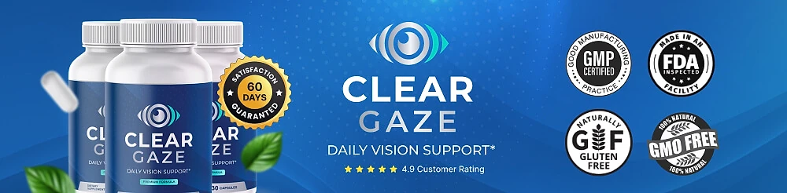

What Is Clear Gaze And How Does It Work?
Clear Gaze is a daily vision support supplement in capsules designed to support healthy eyesight, visual comfort, and antioxidant protection for the eyes for adults who spend long hours on screens, reading, or driving and want to give their eyes extra nutritional support as they age — through a simple habit of one capsule a day.
It utilizes Lutein, Zeaxanthin, Bilberry, Eyebright, and Saffron, together with Vitamins A, C, and E, Zinc, Selenium, Copper, and Chromium, to support normal visual function and long-term eye wellness, combining vitamins, minerals, and botanical extracts in a single formula.
The idea behind Clear Gaze, according to the official website, is that the eyes work hard every day and need steady nutrition. Lutein and Zeaxanthin are carotenoids naturally found in the eye, while Bilberry, Eyebright, and Saffron are botanicals with a long tradition in eye wellness.
The brand presents the formula as a comprehensive blend rather than a single-ingredient product, and it says the combination was chosen to support several pathways related to vision health, from antioxidant defense to everyday visual comfort.
With consistent daily use, the official website says many people describe more comfortable eyes during reading, screen time, and driving. The brand recommends at least 30 to 90 days of regular use and notes that individual results may vary.
From a practical standpoint, each bottle of Clear Gaze contains 30 capsules. Taken as directed, one capsule a day with water, preferably in the morning, a single bottle lasts about a month, which makes the routine easy to follow.
According to the official website, Clear Gaze is manufactured and packaged in the United States, and it is described as gluten-free and non-GMO. It is a dietary supplement, not intended to diagnose, treat, cure, or prevent any disease, and it is meant to complement regular eye exams, not replace them.
Clear Gaze Ingredients
Every capsule of Clear Gaze combines vitamins and minerals with a 351 mg botanical blend. These are the key ingredients the official website highlights:
Lutein: A carotenoid naturally found in the eyes that helps support healthy vision and provides antioxidant protection.
Zeaxanthin: Works alongside lutein to help support healthy visual function.
Bilberry Fruit Extract: A traditional botanical rich in natural antioxidants, long used for eye wellness.
Eyebright Extract: A traditional herb commonly used to support eye comfort.
Saffron Extract: A premium botanical known for its role in supporting healthy vision.
Vitamins and Minerals: Vitamin A (450 mcg), Vitamin C (90 mg), Vitamin E (15 mg), Zinc (11 mg), Selenium, Copper, and Chromium.
The label also lists Taurine, Ginkgo leaf, Grape Seed, Coleus Forskohlii, Alpha Lipoic Acid, Rutin, Quercetin, Lycopene, and Astaxanthin in the same proprietary blend, so the amount of each botanical, including Lutein and Zeaxanthin, is not published. The brand describes the combination as a comprehensive formula designed to support healthy vision and daily eye wellness in one capsule.
Clear Gaze Side Effects
According to the official website, Clear Gaze is made with ingredients commonly used in dietary supplements and is generally well tolerated. It is designed for adults who want a simple, consistent approach to eye nutrition as part of their daily routine.
The formula is described as gluten-free and non-GMO, built on vitamins, minerals, and botanical extracts, and the brand states that it is manufactured in the United States under strict quality and safety standards for dietary supplements. The capsule shell is vegetable-based, made from hypromellose.
With no widespread reports of serious side effects, Clear Gaze is generally considered a well-tolerated option. Still, it contains active botanicals such as Ginkgo, Bilberry, Saffron, and Coleus Forskohlii, so anyone sensitive to these ingredients should start carefully and stop if they notice any discomfort. Do not exceed the recommended dose.
The label states that the product is not for use by anyone under 18 or by pregnant or nursing women, and that anyone taking medication or with a medical condition should consult a physician first. This matters because Ginkgo is part of the blend, and changes in vision should always be checked by an eye doctor.
Clear Gaze Dosage
Clear Gaze is meant to be taken every day, and it is designed to fit easily into a daily routine, making consistency simple and convenient. It comes in vegetable capsules, with no powders to mix and nothing complicated to prepare.
The recommended approach, according to the official website, is to take 1 capsule daily with water, preferably in the morning. Each bottle contains 30 capsules, which equals a one-month supply, so it is easy to know when a new bottle will be needed.
For best results, consistency is key. The official website recommends consistent use for at least 30 to 90 days, and the 60-day satisfaction promise gives you time to follow the routine for two full months. Individual results may vary.
There is no need for complex schedules or multi-step routines. The FAQ says Clear Gaze can be taken alongside most supplements, and it is designed to work with healthy habits such as screen breaks, good lighting, sunglasses outdoors, and regular eye exams.
As with any wellness product, it’s important not to exceed the recommended dosage. Store the bottle in a cool, dry place below 86°F (30°C) and keep it out of reach of children. Clear Gaze works best when used regularly, combined with healthy daily habits.
Clear Gaze – Refund Policy
You can order Clear Gaze with confidence, knowing that every purchase is protected by a 60-day satisfaction promise, counted from the original purchase date. This gives you time to try the capsules and decide if they deliver the support you expect.
According to the official refund policy, customers who are not fully satisfied should contact customer support within 60 days of purchase through the contact page. All bottles must be sent back, whether they are empty or unopened, together with any bonuses or gifts, and the return shipping is paid by the customer unless the wrong or a damaged item was sent.
How the refund process works: Contact support with the subject line “Refund Request” and your order number, then complete the refund form to receive an RMA code. The package must be shipped within 7 calendar days with a trackable method, the packing slip inside, and the RMA code on the label. The policy also mentions an optional partial refund in some cases.
Customer Support Contact Information: the contact page and an SMS line are listed on the official website, and returns go to an address in Aurora, Colorado, USA.
Refund Processing Time: Inspection and approval usually take 3 to 5 business days after the return arrives, and the refund then reaches the original payment method in 5 to 7 business days for credit cards or 5 to 10 for debit cards.
This refund policy is designed to give customers a clear and transparent experience when trying Clear Gaze.
Clear Gaze Customer Reviews
-
Robert M.Verified Purchase – 6 Bottles
“I spend several hours a day reading and working on my tablet. Adding Clear Gaze™ to my daily routine was an easy decision because of the ingredient profile. I appreciate having nutritional support specifically designed for eye health.”
-
Michael D.Verified Purchase – 6 Bottles
“The combination of lutein, zeaxanthin, and vitamins caught my attention. I've been taking Clear Gaze™ consistently and appreciate the convenience of just one capsule a day.”
-
Susan K.Verified Purchase – 6 Bottles
“I work at a computer most of the day and wanted a supplement focused on eye wellness. Clear Gaze™ has become a regular part of my morning routine and I plan to continue using it.”
Clear Gaze – Where To Buy
Clear Gaze is sold through its official website, so if you decide to try it, it's important to be careful about where you purchase it. The official website is the only sales channel the manufacturer lists, and it does not point to marketplaces such as Amazon, eBay, or Walmart.
Listings on third-party platforms may look similar but cannot be verified as authentic, raising concerns about safety, quality, and ingredient freshness. Products purchased outside the official source may not be covered by the 60-day satisfaction promise.
For this reason, most customers recommend purchasing Clear Gaze only through the official website. Buying directly from the official source ensures you receive the authentic original product, with access to customer support and the full guarantee. According to the FAQ, orders are one-time purchases unless you choose a subscription.
To avoid counterfeit batches and ensure maximum quality, always verify that you are ordering from the official Clear Gaze website before completing your purchase.
To ensure you’re getting the authentic product, most users choose to visit the official website.
Is Clear Gaze A Scam?
Based on what the official website discloses, Clear Gaze does not appear to be a scam. It is a real product, sold through an established retailer, and formulated to support healthy eyesight, visual comfort, and antioxidant protection as part of a consistent daily routine.
The ingredients used in Clear Gaze — Lutein, Zeaxanthin, Bilberry, Eyebright, Saffron, Zinc, and Vitamins A, C, and E, among others — are well known in the eye wellness field. The label shows the vitamin and mineral doses, while the botanicals share a 351 mg proprietary blend.
In addition to its formula, Clear Gaze is, according to the official website, manufactured in the USA, gluten-free, and non-GMO, and the brand lists a contact page, an SMS support line, and a return address in Colorado.
Customers quoted on the official website describe an easy one-capsule routine and confidence in a formula built for eye health, especially during long hours of reading and screen work. Results vary from person to person, and no supplement can promise a specific outcome or replace an eye exam, which is why realistic expectations matter.
Clear Gaze is backed by a 60-day satisfaction promise, and the FAQ states that orders are one-time purchases unless the customer chooses a subscription at checkout. This policy underscores the manufacturer's commitment to customer satisfaction and product integrity.
If you're looking for a simple daily capsule to support healthy vision and eye comfort, Clear Gaze is worth considering — especially when purchased directly from the official website.
For those who want to verify product details or check current availability, the official Clear Gaze website remains the safest option.

Check Availability On Official Website
